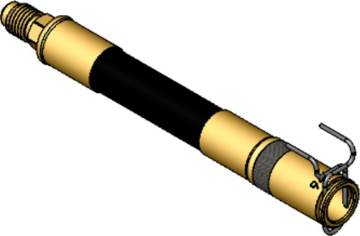
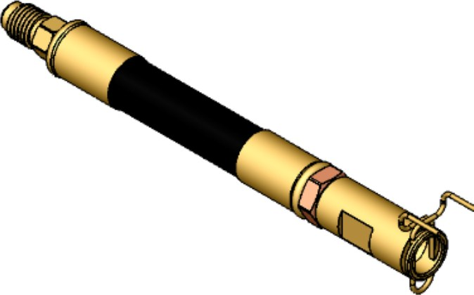
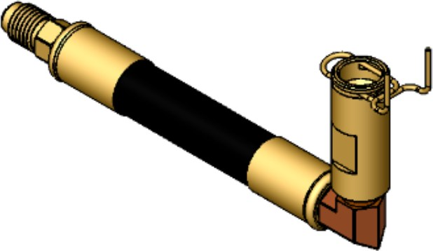
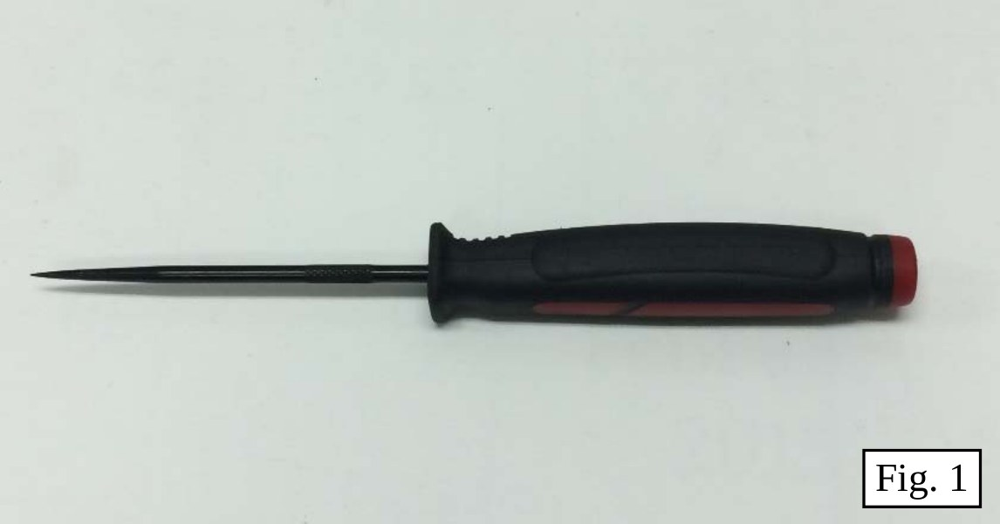
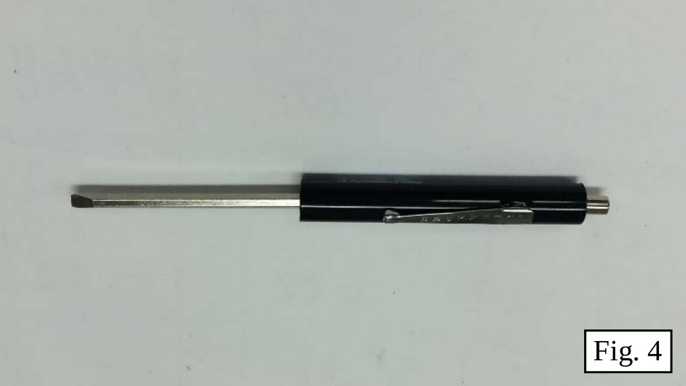
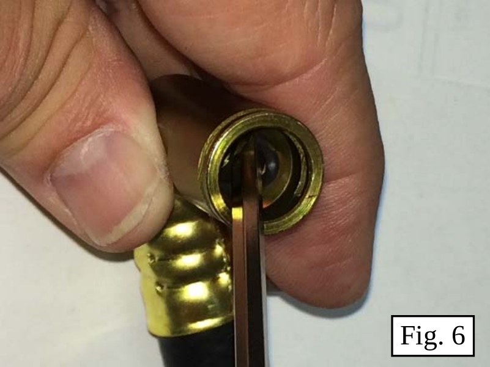

Doc no. MOC-TSB-15-15 // Vol. 15 No. 15 // Aug 10, 2015 // Fuel
Quick Disconnect Fuel Adapters 5/16" & 3/8" with Replaceable O-rings
New730487306073059
MOC has created new quick disconnect adapters for fuel rail services on various vehicles. These new adapters have metal bodies, external spring clips, and accessible O-ring glands to allow the user to replace the O-ring if necessary. Replacement O-ring packs for both adapter sizes are also available.
What's new
- To remove the current O-ring, use a pick-style tool (Fig. 1) and gently insert it behind the O-ring to pull it out of the O-ring gland (Fig. 2). Be careful not to scratch the exposed surfaces of the adapter interior.
- Place the new O-ring (MOC-approved O-rings only) into the adapter horizontally, on top of the angled surface above the O-ring gland (Fig. 3). With a small screwdriver (Fig. 4), gently push the O-ring in until one edge catches under the lip of the gland, then push it into the gland until it is held in place (Fig. 5). Avoid scratching the interior surfaces.
- Push the opposite side of the O-ring down until it is caught by the edge of the gland (Fig. 6), then work the rest of the O-ring into the gland the same way until it is firmly seated.
- Insert the matching male adapter to verify the O-ring is seated properly before starting a service.
Replacement parts are available for these adapters (see the part numbers below).
Contact
For more information, contact the Machine & Equipment Department at 866.244.6621.






Part numbers
| Part No. | Description | Notes |
|---|---|---|
| 73048 | Adapter, Fuel, 3/8" Female QD | |
| 73060 | Adapter, Fuel, 5/16" Female QD | |
| 73059 | Adapter, Fuel, 5/16" Female 90° QD | |
| 94736 | Spring Clip | 3/8" QD adapter |
| 73058 | O-ring (1 pc) | 3/8" QD adapter |
| 73062 | O-ring (25 pk) | 3/8" QD adapter |
| 73056 | Spring Clip | 5/16" QD adapter |
| 73057 | O-ring (1 pc) | 5/16" QD adapter |
| 73061 | O-ring (25 pk) | 5/16" QD adapter |